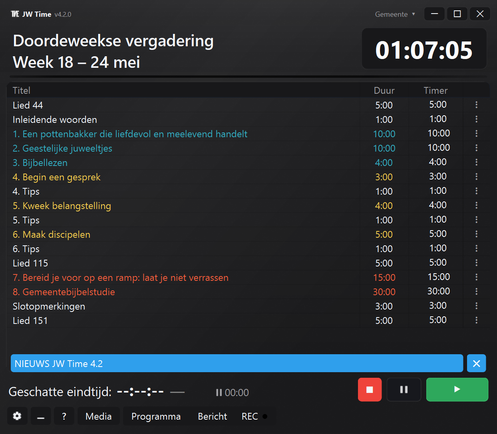
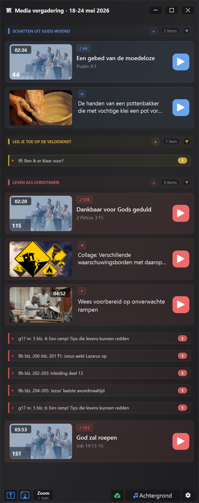

Ontdek de nieuwste functies en verbeteringen van JW Time
Laatste versie beschikbaar in de Store: 4.0.7
De 4.0-serie blijft het programma, het Media-venster, gemeenteprofielen,
de Webmonitor en de algemene stabiliteit van de app verbeteren.
Hier vind je de nuttigste updates die na versie 4.0.0 zijn toegevoegd.
Updates tot en met versie 4.0.7
Versie 4.0.7 VERBETERD
De nieuwe kolom Einde kan de verwachte eindtijd van elk programmaonderdeel tonen.
De nieuwsbanner verschijnt alleen wanneer de online mededeling over een nieuwere versie gaat.
Profielen, back-ups, vensters en opnameapparaten worden betrouwbaarder hersteld.
Mediagroepen gedragen zich voorspelbaarder wanneer je items naar een groep, uit een groep of binnen een groep verplaatst.
Versie 4.0.6 NIEUW
In het Media-venster kun je externe HTTPS-URL's buiten jw.org en wol.jw.org toestaan, als je dat in de instellingen inschakelt.
De Verbindingstest bevat uitgebreidere controles voor de lokale server, de ingebouwde browser, externe URL's en mediamappen.
Zoom-delen gaat beter om met wachtende video's wanneer het selectievenster open blijft.
Je kunt een media-item handmatig als gebruikt of niet gebruikt markeren via het contextmenu.
Versie 4.0.5 VERBETERD
Wanneer je van gemeente wisselt, respecteren het Media-venster en het Openbaar scherm beter de opgeslagen status van het profiel.
De voorbeeldweergave van afbeeldingen en PDF's gaat beter om met niet-opgeslagen wijzigingen.
Bij het sluiten van het Media-venster biedt JW Time duidelijkere keuzes voor wat er met het actieve Openbaar scherm moet gebeuren.
De knop Zoom-delen start het delen alleen als het nog niet actief is.
Versie 4.0.4 VERBETERD
Wanneer een onderdeel over de geplande tijd gaat, toont de timer de overschrijding met een +-teken, bijvoorbeeld +0:20.
De knop Volgende laat duidelijker zien wanneer de volgende klik naar de automatische pauze gaat.
De Webmonitor bewaart de gekozen instellingen beter en is overzichtelijker in timermodus of volledig scherm.
Bij het importeren van één gemeente worden ook de positie en grootte van het timervenster hersteld.
Versie 4.0.3 VERBETERD
Afbeeldingen en video's kunnen de actieve inhoud in het Media-venster direct vervangen, zonder eerst op Stop te drukken.
De Webmonitor bewaart de door de gebruiker gekozen instelling beter tijdens updates, migraties en het opslaan van profielen.
Versie 4.0.2 VERBETERD
Verbeterde import van JW Library-playlists, inclusief media die zonder extensie zijn opgeslagen maar wel een bestandstype hebben.
Als het in de playlist aanwezig is, herkent JW Time het beginlied van de openbare lezing beter.
Labels en enkelvoud/meervoud in mediagerelateerde vensters volgen beter de taal van de app.
Versie 4.0.1 VERBETERD
Verbeterd ophalen van officiële Wachttoren-media wanneer de studieweek op de grens tussen twee uitgaven valt.
Het Media-venster accepteert ook het slepen van JW Library-playlists en JW Time-playlists.
In de startwizard wordt bij het wijzigen van de taal de jaartekst van het Openbaar scherm direct bijgewerkt naar de effectieve taal.
Versie 4.0.0
Geïntegreerde media, Openbaar scherm, gemeenteprofielen, Webmonitor met afstandsbediening, flexibelere opname en completere hulpmiddelen om de vergadering voor te bereiden.
Versie 4.0.0 voegt hulpmiddelen toe om beschikbare inhoud makkelijker voor te bereiden en te controleren, die op het Openbaar scherm te tonen en timers, media en opname met minder handmatige stappen te beheren.
De functies die voor 3.0 waren gepland zijn samengevoegd in 4.0.0, samen met het nieuwe mediasysteem, het Openbaar scherm en de gemeenteprofielen. Daarom gaat de geschiedenis direct van 2.1.0 naar 4.0.0.
Hieronder vind je de belangrijkste nieuwigheden, met concrete voorbeelden van wat er verandert in het echte gebruik van de app.


Voorbeeld van de nieuwe interface en het Media-venster van JW Time 4.0.
Kort samengevat NIEUW
Je kunt afbeeldingen, video's, PDF's, URL's, liederen en al beschikbare officiële inhoud bekijken en ordenen met ondersteuning van het Media-venster.
Toon media en visuele inhoud op een Openbaar scherm dat gescheiden is van het Contatempo-scherm.
Pas het Contatempo-scherm aan met presets, editor, achtergronden, kleuren, logo, klok en lagen.
Gebruik afzonderlijke gemeenteprofielen voor schermen, vensters, server, opname, media en lay-out.
Open de Webmonitor via QR en bedien, indien toegestaan, timer en schema vanuit de browser.
Maak completere pakketten en back-ups klaar om offline te werken of de configuratie te verplaatsen.
Media en voorbereiding van de vergadering NIEUW
Het Media-venster biedt een hulpmiddel om beschikbare inhoud makkelijker voor te bereiden en te controleren.
Opmerking: het Media-venster is een technische ondersteuningsfunctie. Het helpt beschikbare inhoud makkelijker voor te bereiden en te controleren, maar het praktische gebruik blijft altijd afhankelijk van plaatselijke behoeften, aanwijzingen van de gemeente en regelingen.
Voeg lokale bestanden, afbeeldingen, video's, PDF's en URL's toe.
Bekijk liederen, officiële media en inhoud die aan de week gekoppeld is.
Orden handmatige inhoud in groepen en rangschik items volgens het programma.
Controleer vooraf wat beschikbaar is en wat ontbreekt.
Open of toon inhoud op het Openbaar scherm zonder die in verschillende mappen te zoeken.
Officiële media, playlists en pakketten NIEUW
JW Time kan helpen om al beschikbare officiële inhoud en lokale inhoud ordelijker te organiseren en opnieuw te gebruiken, ook wanneer je offline moet werken.
Download en hergebruik officiële media die lokaal al aanwezig zijn.
Beheer een speciale cache voor officiële liederen, met beschikbaarheidscontroles.
Importeer playlists en koppel materiaal dat al is voorbereid.
Maak of gebruik mediapakketten met lokale bestanden, URL's, afbeeldingen en officiële inhoud.
Open Mediacontrole om ontbrekende bestanden, offline inhoud, problemen en lokale grootte te zien.
Kopieer controledetails wanneer je een probleem moet controleren of delen.
Belangrijke opmerking: het alternatieve pad dat in JW Time 2.1.0 is ingevoerd, geldt voor doordeweekse en weekendprogramma's. Voor officiële media bestaat er geen tweede downloadserver. Als router, firewall, DNS of inhoudsfilters JW Time blokkeren bij toegang tot jw.org of religieuze sites, kan het Media-venster mogelijk geen officiële media downloaden. Reeds gedownloade bestanden, lokale media en handmatig toegevoegde inhoud blijven bruikbaar.
Contatempo-scherm en Openbaar scherm NIEUW
De weergaven zijn gescheiden: het Contatempo-scherm is bedoeld voor wie de vergadering leidt, het Openbaar scherm voor de zaal.
Begin met kant-en-klare presets voor het Contatempo-scherm.
Wijzig indeling, lagen, kleuren, achtergronden, logo, klok en teksten met de editor.
Toon afbeeldingen, PDF's, video's en visuele inhoud op het Openbaar scherm.
Houd de timer voor wie de vergadering leidt gescheiden van de inhoud die aan het publiek wordt getoond.
Herstel vensters buiten het scherm en gewijzigde monitorconfiguraties beter.
Gemeenten, profielen en back-up NIEUW
Gemeenteprofielen voorkomen dat JW Time opnieuw moet worden ingesteld wanneer de app in verschillende situaties wordt gebruikt.
Houd taal, thema, interfaceschaal, schermen en vensters gescheiden.
Sla verschillende configuraties op voor Webserver, opname, media en lay-out.
Importeer, exporteer en dupliceer profielen om vergelijkbare configuraties voor te bereiden.
Zet instellingen over naar een andere computer met completere back-ups.
Bestaande instellingen worden naar het eerste profiel gemigreerd.
Webserver en afstandsbediening NIEUW
De Webserver kan alleen worden gebruikt om het programma te bekijken of, indien toegestaan, om vanuit de browser in te grijpen.
Open de Webmonitor vanaf telefoon, tablet of een andere computer in hetzelfde netwerk.
Gebruik de QR-code om het adres van de Webserver sneller te openen.
Volg timer, programma en geschatte eindtijd in realtime.
Met de rol Controller kun je starten, stoppen, naar het volgende onderdeel gaan en beschikbare waarden in het schema wijzigen.
Bescherm Editor, Controller en externe toegang met een PIN wanneer dat nodig is.
Opname en audio VERBETERD
De opname is beter aangepast aan de echte gang van zaken tijdens de vergadering, waarbij pauzes, hervattingen en snelle controles nodig kunnen zijn.
Beheer pauzeren en hervatten van de opname directer.
Controleer de geconfigureerde audioapparaten beter.
Bekijk nuttige informatie via de REC-knop en de audioniveaus.
Integreer opname, media en timer zonder onnodige panelen te openen.
Instellingen, eerste configuratie en interface VERBETERD
De instellingen zijn per gebied opnieuw geordend en de eerste configuratie helpt de belangrijkste onderdelen in te stellen.
Stel taal, schermen, server, back-up en hoofdopties in tijdens de eerste start.
Vind thema, interfaceschaal en programmataal makkelijker.
Gebruik aparte instellingenpanelen voor Media, Zoom, Webserver, Opnamen en Back-up.
Open het venster Nieuws in de app ook na de eerste start.
Stabiliteit en correcties OPGELOST
Veel correcties hebben betrekking op praktische situaties die tijdens wekelijks gebruik kunnen voorkomen.
Vensters worden beter onthouden en betrouwbaarder hersteld na monitorwijzigingen.
De app sluit ordelijker af, ook met server, media en schermen geopend.
Stabieler beheer van Openbaar scherm, Webserver, media en opname.
Downloads, mediacache, lokale paden en tijdelijke bestanden zijn verbeterd.
App-statussen zijn consistenter bij het wisselen van week, taal, gemeente of programma.
Versie 2.1.0
OPLOSSING VOOR ALLE GEMEENTEN DIE DE PROGRAMMA'S NIET KONDEN DOWNLOADEN.
Programma's blijven bereikbaar, met nieuwe downloadopties.
⚠️ Problemen met de Webserver?
LET OP: maak voordat je verdergaat een back-up van de app, omdat je de app moet verwijderen.
Sommige gebruikers die vanaf eerdere versies bijwerken, kunnen problemen ondervinden met de functie Server Web. Als de Webserver niet reageert, volg dan deze stappen om de firewallregels op te schonen:
Oplossing (eenmalig uitvoeren):
Druk op Start en zoek naar: "Windows Defender Firewall met geavanceerde beveiliging". Open dit.
Klik links op Regels voor binnenkomende verbindingen.
Zoek in de lijst naar vermeldingen die JWTime.
Verwijder ze allemaal (klik met rechts op de regel -> Verwijderen).
Nadat je de regels hebt verwijderd, installeer je JWTime opnieuw en laad je de instellingen opnieuw. Probeer daarna de Webmonitor te gebruiken.
Zodra je dit hebt gedaan, hoef je het niet meer te herhalen.
Automatische alternatieve download NIEUW
Extra pad om doordeweekse of weekendprogramma's te downloaden wanneer router of firewall restrictief zijn.
Op het tabblad Verbindingen kun je ook afdwingen dat programma's vanaf een specifieke server worden gedownload.
Opmerking: de tweede server bewaart slechts 12 weken.
Dank aan Mauro voor de waardevolle hulp bij de analyse van WOL-verbindingsproblemen die door specifieke routerconfiguraties werden veroorzaakt.
Verbeterde Webmonitor NIEUW
Weergave van liederen en verzenden van berichten naar het scherm in gedeeltelijke modus of volledig scherm.
Automatisch opnieuw verbinden bij verbreking en schermbeveiliging om het aangesloten display te beschermen.
Knop Pauzeren/Hervatten bij opname VERBETERD
Je kunt de opname nu onderbreken en later hervatten terwijl één bestand behouden blijft. Ideaal om specifieke momenten, zoals gebeden, uit te sluiten of onverwachte onderbrekingen te beheren.
Scherm- en vensterbeheer VERBETERD
Het beheer van vensters op volledig scherm (Contatempo en Begin vergadering) is verbeterd. Het systeem voorkomt nu onbedoelde overlappingen met de hoofdinterface, ook wanneer de externe monitor plotseling wordt losgekoppeld, zodat je altijd volledige controle over de app houdt.
Verbeterde diagnostiek VERBETERD
Verbindingstest met meer nuttige gegevens en duidelijkere foutmeldingen wanneer online ophalen van programma's mislukt.
Diverse verbeteringen en bugfixes
Algemene optimalisaties, visuele verbeteringen en kleine correcties voor stabiliteit en duidelijkheid.
Versie 2.0.0
Een volledig vernieuwde versie met geavanceerde functies voor het beheer van vergaderingen.
⚠️ Back-upadvies
Met deze versie worden veel nieuwe opties toegevoegd die niet in oude back-ups aanwezig zijn: het nieuwe opslagformaat is .jwtimesettings, maar je kunt ook oude back-upbestanden in .json-formaat laden. Nadat je de nieuwe instellingen van versie 2.0 hebt geconfigureerd, is het verstandig ook een nieuwe back-up in .jwtimesettings-formaat te maken, zodat alle nieuwe opties worden opgeslagen.
Portugees (Brazilië) toegevoegd NIEUW
Portugees (Brazilië) is toegevoegd en kan in het menu Instellingen worden geselecteerd.
Opname van vergaderingen NIEUW
Versie 2.0 introduceert een nieuwe functie voor audio-opname van vergaderingen.
Waar vind je die:
Venster Instellingen: nieuw tabblad "Opname"
Hoofdvenster: nieuwe knop REC
Belangrijkste functies:
Keuze van doelmap
Opnametest
Volumeregeling microfoon en pc-audio
Automatische ducking-functie
Statistieken voor ruimte en bestanden
Handmatige bediening met REC-knop
Back-up voor OFFLINE-modus NIEUW
Automatische back-up van weekprogramma's:
Tot 12 weken automatisch opgeslagen
Programma ophalen ook zonder verbinding
Werkt op de achtergrond
Geëxporteerde back-ups voor OFFLINE-gebruik:
Handmatige export van programmapakketten
Overdraagbaar naar andere pc's zonder internet
Ideaal voor pc's in de zaal die niet met het netwerk verbonden zijn
Meertalig beheer:
Aparte back-ups voor elke taal (IT, EN, ES, DE, pt_BR)
Geen overlap tussen verschillende talen
Verbinding, Webserver en logboeken VERBETERD
Geavanceerde verbindingstest:
Controle internetverbinding en benodigde sites
Controle HTTPS en certificaten
Controle systeemproxy
Controle tijdsynchronisatie
Schrijftest voor mappen (logboeken, cache, back-up)
Verbeterde logboeken:
Logmap direct openen vanuit instellingen
Duidelijkere en nuttigere berichten
Webserverpagina:
Ondersteuning voor licht/donker thema
Handmatige lijsten opslaan NIEUW
Wanneer je op de knop "Handmatig" op het tabblad Programma's drukt, heb je nu twee nieuwe knoppen:
"Handmatige lijst opslaan" - Slaat je aangepaste lijst op
"Handmatige lijst laden" - Roept een opgeslagen lijst op
Voordelen:
Maak volledig aangepaste lijsten
Sla op met een herkenbare naam
Roep op zonder alles opnieuw te schrijven
De knoppen verdwijnen wanneer je teruggaat naar Doordeweeks/Weekend
Nieuw licht thema VERBETERD
Het nieuwe lichte thema is ingevoerd en volledig toegevoegd in versie 2.0.
Verbeteringen licht thema:
Beter leesbare kleuren voor Leven als christenen en Oefeningen
Cellenselectie duidelijker zichtbaar
Tekstkleuren in tabel en actief display gecorrigeerd
Probleem met pop-up lied spreker opgelost
Algemene interface:
Verbeteringen voor meer duidelijkheid
Uniformer en consistenter ontwerp
Versie 1.8.4
Belangrijke update
Adaptieve Wachttoren-studie
De app past automatisch de duur van de Wachttoren-studie aan om te helpen de vergadering op de geplande eindtijd te sluiten. Deze functie wordt geactiveerd via de Algemene instellingen.
Indicator tijdsafwijking
Realtime meldingssysteem dat laat zien of de vergadering:
Achterloopt (rood): Meer dan 1 minuut achterstand
Achterloopt (geel): Tot 1 minuut achterstand
Voorloopt (groen): De vergadering verloopt sneller dan gepland
Precies op tijd: Geen kleur weergegeven
De indicator wordt automatisch realtime bijgewerkt tijdens de vergadering.
Technische verbeteringen
Timersynchronisatie geoptimaliseerd voor meer nauwkeurigheid
Betere stabiliteit van het Contatempo-scherm op externe monitoren
Kleine grafische correcties aan de interface
Algemene prestaties geoptimaliseerd
Versie 1.8.0
Pauzefunctie
Pauzefunctie
De functie Pauze (ZZ) is ingevoerd; deze pauzeert de huidige timer en toont de indicator ⏸. De app houdt de totale "pauzetijd/wissel spreker" bij.
Je kunt:
Hervatten: Gaat verder vanaf het punt waar je was gestopt
Resetten: Zet de opgebouwde technische tijd terug op nul
Adaptieve Bijbelstudie
Eerste versie van de adaptieve functie, toegepast op de gemeentebijbelstudie. De app past automatisch de duur aan om de geplande eindtijd te behouden.
Bugfixes
Synchronisatieproblemen tussen hoofdscherm en externe monitor opgelost
Algemene stabiliteit van de app verbeterd
Versie 1.1.6
Compatibiliteitsupdate
Schema-updates
Problemen met de Contatempo-tabel gecorrigeerd, in lijn met wijzigingen op de officiële website jw.org.
Synchronisatie bijgewerkt voor het nieuwe schemaformaat
Compatibiliteit met de laatste wijzigingen in de vergaderprogramma's